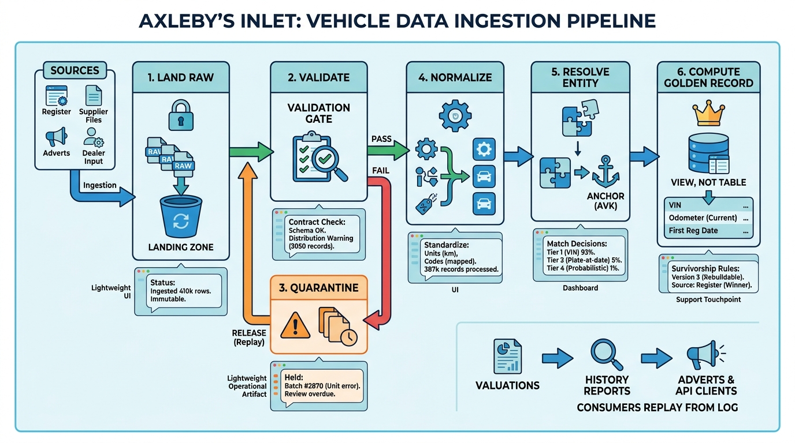

Part II — VEHICLE: Identity, Specification and History
From Many Sources to One Record: Ingestion, Normalization and Entity Resolution

Image generated by Google Gemini (gemini-3-pro-image-preview)
Part II — VEHICLE: Identity, Specification and History

Image generated by Google Gemini (gemini-3-pro-image-preview)